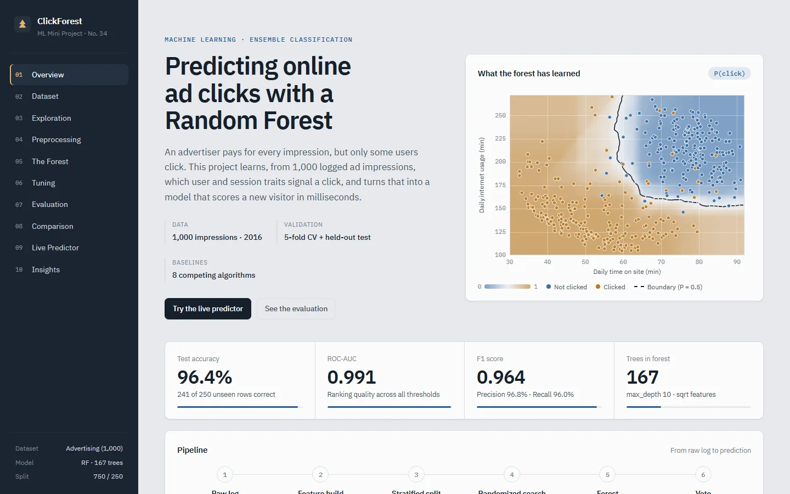

ClickForest
Predicting whether a user will click an online ad, using a Random Forest I built from scratch and an interactive dashboard that explains every step.
- Context
- ML Mini Project No. 34
- My part
- Data, model, dashboard, report
- Stack
- Python, NumPy, scikit-learn, Flask, Chart.js

- Test accuracy: 241 of 250 unseen users correct
- 96.4%
- ROC-AUC across all thresholds
- 0.991
- Trees in the final forest
- 167
- Model fits in the tuning search
- 300
01The problem
An advertiser pays for every impression, but only some users click. Which user and session traits signal a click?
The data is the public Advertising dataset: 1,000 ad impressions, 10 columns, no missing values and a perfectly balanced target (500 clicks, 500 non-clicks). I used time on site, internet usage, age, area income and gender, and split the timestamp into hour, weekday and month. Ad headline, city and country were dropped because nearly every value is unique, so they can't generalise.
I also engineered one feature, site share: time on the site divided by total daily internet usage.
02Approach
- Leak-free preprocessing. One
FeatureBuildertransformer caps outliers with IQR, decomposes the timestamp and adds the ratio feature. It is refit inside every cross-validation fold, so test data never leaks into training. - A forest from scratch. CART trees with Gini splits, bootstrap sampling, random feature subsets, out-of-bag scoring and feature importance, all in NumPy.
- Tuning. A randomized search over 60 configurations with 5-fold stratified cross-validation (300 fits). Winner: 167 trees,
max_depth=10,max_features="sqrt",min_samples_leaf=4. - Evaluation on 250 held-out users the model never saw during training or tuning.
03Does the scratch version hold up?
The brief asked for at least one algorithm implemented by hand, so I built the whole forest and compared it with scikit-learn. Both used the same settings (100 trees, √9 = 3 features per split, Gini, unlimited depth):
| Metric | From scratch | scikit-learn |
|---|---|---|
| Test accuracy | 96.0% | 96.8% |
| ROC-AUC | 0.990 | 0.990 |
| Out-of-bag accuracy | 96.5% | 96.5% |
| Mean tree depth | 10.0 | 9.5 |
| Predictions that agree | 99.2% | |
Feature importances matched as well. Internet usage and time on site carry about 36% each in both versions.
04An honest comparison
I compared the forest against other algorithms on the same split, with 95% confidence intervals and McNemar's test to check whether each gap is real.
| Model | Accuracy | ROC-AUC | McNemar p vs RF |
|---|---|---|---|
| Logistic Regression | 98.0% | 0.991 | 0.125 |
| Gaussian Naive Bayes | 97.6% | 0.993 | 0.250 |
| KNN (k = 3) | 96.8% | 0.985 | 1.000 |
| Random Forest (tuned) | 96.4% | 0.991 | — |
| Gradient Boosting | 96.0% | 0.988 | 1.000 |
| SVM (RBF) | 96.0% | 0.988 | 1.000 |
| AdaBoost | 95.2% | 0.980 | 0.453 |
Logistic Regression won, and I kept that in the report. The gap is 4 rows out of 250, and McNemar's test gives p = 0.125, so it isn't statistically significant. Clicks split along a fairly clean boundary in the two usage features, so a linear model is already a strong fit here. The forest's ROC-AUC is the same 0.991.
05What the data says
- Light internet users click. People online for less than 150 min a day click 99% of the time. At 200+ min a day, only 7% do.
- Short visits click. Visitors who spend under 60 min on the site click 96% of the time. At 75+ min, it's 9%.
- Older users and lower-income areas click more. 91% of users aged 45+ click, against 25% of under-30s.
- Timing and gender don't matter. Hour, weekday and month have near-zero permutation importance.
06The dashboard
Built with Flask, vanilla JS and Chart.js. Every chart comes from the real model output. Click any screenshot to enlarge it.
07Run it yourself
A trained model is included, so the dashboard starts straight away. Retraining everything takes about a minute.
# clone and start the dashboard git clone https://github.com/prathmeshsadaphule15/Random-Forest.git cd Random-Forest pip install -r requirements.txt python app/app.py # → http://127.0.0.1:5000 # optional: retrain from scratch python -m ml.train